Tests
| Check | Input | Result | Status |
|---|---|---|---|
| Bundled Sheep native import | Synthetic Pi user/assistant turns; disposable Codex destination; stubbed Codex CLI launch. | The actual bundled helper creates a separate Codex session, leaves the source byte-for-byte unchanged, discovers both chats, returns both readable turns and paged native records. The JSON bridge rejects an import operation because that operation is not implemented. | Pass |
| Credential identity | Development startup reads credentials saved by the packaged app. | The app sets its surprised-face identity before its profile path and credential storage are used. | Pass |
| App profile | Development and packaged startup under the same operating system app-data folder. | Both select surprised-face. The preview does not inherit a stale local Worker connection from the generic Electron profile. | Pass |
| Isolated development profile | SURPRISED_FACE_DEV_DATA points to /tmp/chat-check. | Only a development run selects the isolated folder; the installed app keeps its dedicated profile. | Pass |
| Human message identity | event 1: member-1, Maya, "Hello" | SQLite keeps the participant ID and name. Replaying the event adds no duplicate. | Pass |
| Room event order | WebSocket event 2 arrives before event 1. | Local events apply in sequence 1, 2; the cursor ends at 2. | Pass |
| Queued sends | Two pending messages; two flush requests start together. | The mocked API receives each message once, in saved order, with one active send. An acknowledgement notification refreshes the UI after the pending copies are removed. | Pass |
| Room service default | A new settings file has no saved room service URL. | Disconnected installs use the managed hosted URL; an explicit local development override can use a local Worker. | Pass |
| Appearance choices | Saved theme is light, green, dark, cobalt-red, or an unknown value. | Saved Light opens Classic; Green and Dark open Mint + charcoal; new installs use Mint + charcoal. | Pass |
| Development helper | Quasar app path is app/.quasar/dev-electron; bundled helper is app/resources/bin/sheep. | The app resolves the helper in the project resources directory. | Pass |
| Packaged helper | A packaged app with its own resources directory. | The app resolves resources/bin/sheep inside the package. | Pass |
| Catalog filters | Three local chats with different project paths, harnesses, agents, and titles. | Combined filters return only the matching chat; an unknown agent returns none. | Pass |
| Missing chat path | One local chat has no path; the user selects /work/game. | The pathless chat is skipped and the matching chat is shown without a render error. | Pass |
| Stale project | A pinned discovered project points to a deleted 0900 folder; others are internal, one-off, or ignored. | They are absent from the project list; real folders and manually tracked offline projects remain. | Pass |
| Recent projects | Alpha has a newer chat than Beta, while Gamma has an older chat. | Project order is Alpha, Beta, Gamma by activity time. | Pass |
| Nested project chats | A chat in /work/game, with both /work and /work/game tracked as projects. | The child project owns the activity; the parent is sorted by its own activity. | Pass |
| Chat placement | Chats under a project, a nested project, and an unrelated folder. | Each chat appears only under its most specific tracked project. | Pass |
| Readable chat | User and assistant turns mixed with system and tool records. | The chat shows only user and assistant turns; raw records stay internal. | Pass |
| New Codex chat | Create a Codex chat in /work/game with chosen-model, then send Hello. | The selected folder and model reach thread/start. The first message uses the new session without reopening it. | Pass |
| New Hermes chat | Create with an empty folder, then /work/game and hermes-model. | The empty folder is rejected. The selected folder and model reach session/new. | Pass |
| New chat persistence | Save a new native chat, close SQLite, and reopen it. | The chat title, native ID, harness, and project folder survive restart. | Pass |
| Native setup context | Native user records contain an AGENTS.md setup envelope, environment context, and an ordinary question about AGENTS.md. | Only the actual question and assistant reply appear. The same visible history is used for a chat invite. | Pass |
| Codex local chat | Send to thread-1 twice after opening an existing Codex conversation. | The adapter resumes once and emits reply text and completion for both turns. | Pass |
| Hermes local chat | Send to session-1 through Hermes ACP. | The adapter emits started, reply text, and completed in that order. | Pass |
| Imported chat copy | Imported assistant message with an original timestamp and agent owner. | The local copy retains its agent attribution, original time, and native room link. | Pass |
| Window navigation | Hash route, local file, and external web URL navigation attempts. | Only the loaded app document and its hash routes are allowed. | Pass |
Runner output
TAP version 13 # Subtest: development and installed apps use the same dedicated profile instead of Electron settings ok 1 - development and installed apps use the same dedicated profile instead of Electron settings --- duration_ms: 0.337041 type: 'test' ... # Subtest: isolated development profiles are explicit and never affect the installed app ok 2 - isolated development profiles are explicit and never affect the installed app --- duration_ms: 0.065708 type: 'test' ... # Subtest: app identity is set before opening the shared profile and its encrypted credentials ok 3 - app identity is set before opening the shared profile and its encrypted credentials --- duration_ms: 0.339541 type: 'test' ... # Subtest: local chat search combines project, harness, agent, and text filters ok 4 - local chat search combines project, harness, agent, and text filters --- duration_ms: 0.625125 type: 'test' ... # Subtest: project filtering tolerates local chats without a working folder ok 5 - project filtering tolerates local chats without a working folder --- duration_ms: 0.077083 type: 'test' ... # Subtest: project list skips stale and internal discovered folders ok 6 - project list skips stale and internal discovered folders --- duration_ms: 1.446291 type: 'test' ... # Subtest: projects sort by the latest chat activity rather than alphabetically ok 7 - projects sort by the latest chat activity rather than alphabetically --- duration_ms: 0.193125 type: 'test' ... # Subtest: a nested project owns its chats and activity instead of its parent ok 8 - a nested project owns its chats and activity instead of its parent --- duration_ms: 0.080584 type: 'test' ... # Subtest: new app chats remain in the local catalog after restarting ok 9 - new app chats remain in the local catalog after restarting --- duration_ms: 9.054959 type: 'test' ... # Subtest: stores the human participant name with the committed message ok 10 - stores the human participant name with the committed message --- duration_ms: 4.153333 type: 'test' ... # Subtest: imported agent history keeps its author and original time in the local copy ok 11 - imported agent history keeps its author and original time in the local copy --- duration_ms: 3.527417 type: 'test' ... # Subtest: a new project chat creates a native session and sends its first message without resuming it ok 12 - a new project chat creates a native session and sends its first message without resuming it --- duration_ms: 1.642292 type: 'test' ... # Subtest: a new Hermes project chat keeps the selected folder and rejects a missing project ok 13 - a new Hermes project chat keeps the selected folder and rejects a missing project --- duration_ms: 0.336542 type: 'test' ... # Subtest: an opened Codex chat resumes its native session and streams a reply ok 14 - an opened Codex chat resumes its native session and streams a reply --- duration_ms: 0.237958 type: 'test' ... # Subtest: a Hermes local chat streams its own reply and releases the session ok 15 - a Hermes local chat streams its own reply and releases the session --- duration_ms: 0.161459 type: 'test' ... # Subtest: reopening a new Codex chat hides injected project instructions while keeping the actual conversation ok 16 - reopening a new Codex chat hides injected project instructions while keeping the actual conversation --- duration_ms: 0.60775 type: 'test' ... # Subtest: a chat transcript shows conversation turns while leaving harness records out of the chat ok 17 - a chat transcript shows conversation turns while leaving harness records out of the chat --- duration_ms: 0.081458 type: 'test' ... # Subtest: desktop navigation stays on the app document or its hash routes ok 18 - desktop navigation stays on the app document or its hash routes --- duration_ms: 0.321375 type: 'test' ... # Subtest: a chat belongs to the deepest matching project ok 19 - a chat belongs to the deepest matching project --- duration_ms: 0.395792 type: 'test' ... # Subtest: applies out-of-order room events only after the missing sequence arrives ok 20 - applies out-of-order room events only after the missing sequence arrives --- duration_ms: 0.676958 type: 'test' ... # Subtest: flushes pending sends once and in the outbox order ok 21 - flushes pending sends once and in the outbox order --- duration_ms: 11.510333 type: 'test' ... # Subtest: new installs use the deployed room service URL ok 22 - new installs use the deployed room service URL --- duration_ms: 0.320458 type: 'test' ... # Subtest: appearance offers two reference themes and keeps the previous layout as Classic ok 23 - appearance offers two reference themes and keeps the previous layout as Classic --- duration_ms: 0.316542 type: 'test' ... # sheep bridge request "conversations.import": unknown operation "conversations.import" # Subtest: bundled Sheep imports a synthetic Pi chat into a separate Codex session ok 24 - bundled Sheep imports a synthetic Pi chat into a separate Codex session --- duration_ms: 5055.325417 type: 'test' ... # Subtest: development finds the bundled helper beside the project, not inside Quasar output ok 25 - development finds the bundled helper beside the project, not inside Quasar output --- duration_ms: 1.4095 type: 'test' ... # Subtest: packaged builds use their bundled resources directory ok 26 - packaged builds use their bundled resources directory --- duration_ms: 0.076958 type: 'test' ... 1..26 # tests 26 # suites 0 # pass 26 # fail 0 # cancelled 0 # skipped 0 # todo 0 # duration_ms 5137.85375
Sheep source and bundle
2026-10-05T17:26:25.225864+02:00 · go test -json ./... in the Sheep checkout · 179 passed · 0 failed · 2 skipped.
The existing darwin/arm64 bundle reports revision 6e44c568f0c04071859c5357b0565c83ddf4ed25 and vcs.modified=false in Go build metadata. It already contains the native import commit. This is an audit of committed behavior, not a new app export feature; no product behavior changed in this review. The bundled-helper regression above executes the converter with synthetic text and disposable target roots, then checks bridge discovery and reads. Harness launch is stubbed; other native import targets and a real harness resume were not exercised.
Go test events · Bundle and test metadata
Chat interface
The actual Vue interface runs in Chromium with mocked Electron IPC. Project names, messages, agent replies, account identity, and invite codes are synthetic. window.prompt throws as it does in Electron. Assertions cover the rendered controls and API calls; hardware clipboard and live model calls are checked separately.
| Workflow | Result |
|---|---|
| an empty chat view has no phantom invite and selecting a project enables its composer | Pass |
| project plus and composer selectors create a Hermes chat and send its first message | Pass |
| New chat survives Electron prompt restrictions and a failed first send keeps the draft for retry | Pass |
| inviting from a local chat shows its code in a modal and copies only on request | Pass |
| an existing chat has invite and join dialogs with a working join form | Pass |
| invite and join dialogs use consistent type and padding in mint-charcoal | Pass |
| invite and join dialogs use consistent type and padding in cobalt-red | Pass |
| invite and join dialogs use consistent type and padding in classic | Pass |
| invite generation shows loading and lets a failed request retry inside the modal | Pass |
| join dialog contains keyboard focus, closes on its backdrop, and accepts a new account name | Pass |
| changing the composer project keeps the draft and New chat resets it | Pass |
| a delivered chat message clears its sending copy without waiting for another message | Pass |
| an invite emptyInvite shows an error instead of a false copy confirmation | Pass |
| an invite failCopy shows an error instead of a false copy confirmation | Pass |
| composer and project controls fit a smaller desktop window | Pass |
| Settings accepts a chat invite for a connected account | Pass |
| Settings accepts a chat invite for a new account | Pass |
| the new chat header has distinct labeled invite and join actions | Pass |
| the native chat header has distinct labeled invite and join actions | Pass |
| the room chat header has distinct labeled invite and join actions | Pass |
| appearance and general settings save automatically and stay selected after leaving Settings | Pass |
| rapid appearance changes save in order without reverting the latest selection | Pass |
| an automatic save failure is visible and Retry saves the chosen theme | Pass |
| Settings reads the Codex account, checks status with feedback, and signs out | Pass |
| checking a signed-out Codex account does not start login and login completion refreshes it | Pass |
| Codex account changes refresh the status and failed sign-out keeps the account | Pass |
| Codex check failures show an error and leave Check status available | Pass |
Before the fixes
The first UI run reproduced the phantom empty invite field and the New chat recovery screen from Electron's unsupported prompt. Five of six checks failed; the viewport-only check passed. Native session creation and catalog persistence also failed before implementation.
Original UI results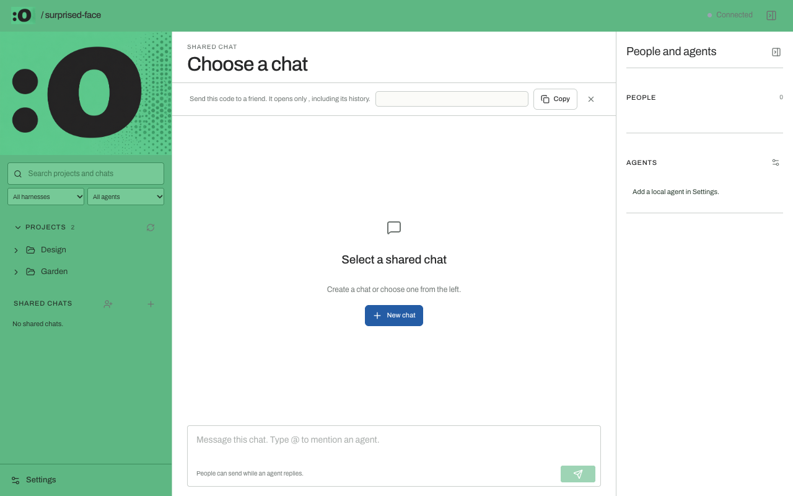
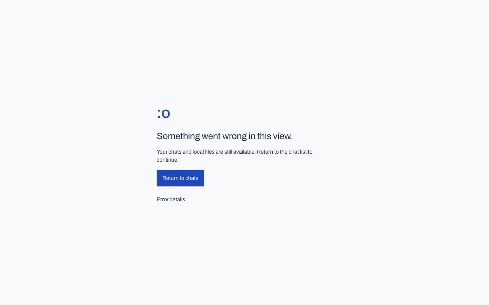
Chat actions before this change
Four UI assertions failed before the labeled header buttons and detailed confirmation were implemented. The Join action was beside Projects, and both actions used a person-plus icon. A placement check then caught a larger notification covering the header buttons. The intermediate implementation placed a large confirmation below the header. That banner has now been replaced by the invite dialog.
Failing action checks · Failing placement check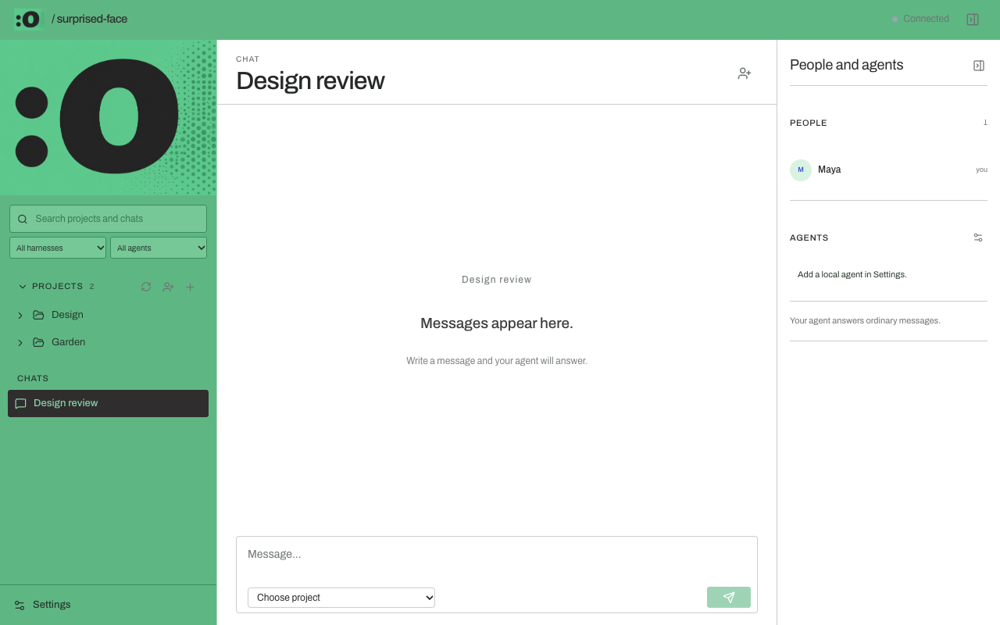
Settings before automatic saving and account controls
Seven new interface checks failed before this change. Appearance required Save settings, account status was not loaded on opening Settings, and no sign-out action or status-check feedback was shown. The current tests exercise debounced serial saving, leaving Settings immediately, retaining preferences after a reload, error and retry feedback, existing and absent Codex accounts, login completion, account changes, and successful and failed sign-out. The synthetic Codex response follows the installed app-server protocol: account identity determines sign-in state; requiresOpenaiAuth describes whether authentication is required.
Failing settings and account checks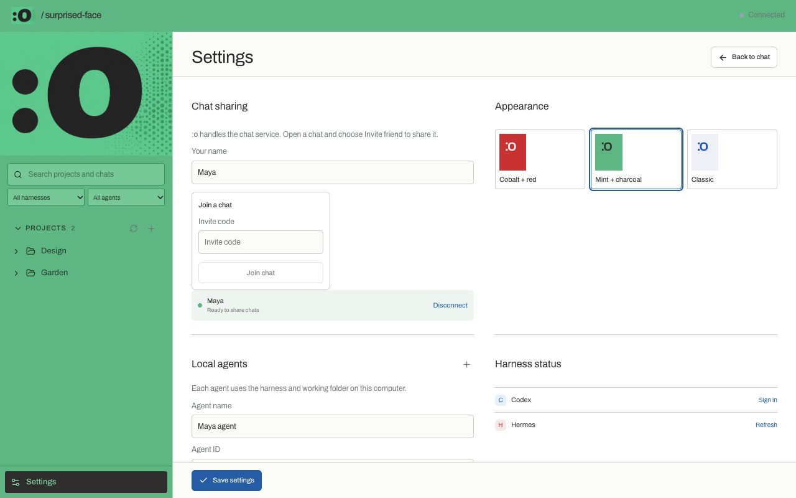
Sharing dialogs before this change
The targeted red run failed in all three themes: Join chat inherited a 60px heading instead of the expected size of at most 20px. The initial invite checks also found no dialog and automatic clipboard copying. The current checks assert code presentation before copying, explicit Copy calls, errors without false confirmation, loading and retry, dismiss and reopen, focus restoration after importing a native chat, keyboard focus containment, a new account joining, 24px padding, and regular headings in every theme.
Failing dialog typography checks · Failing keyboard focus check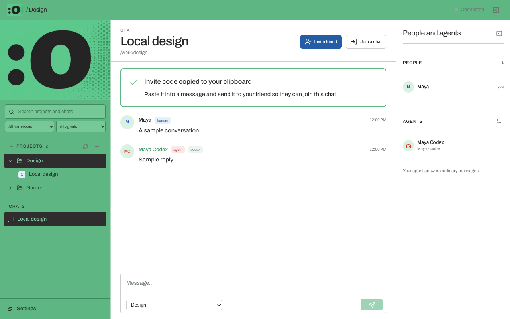
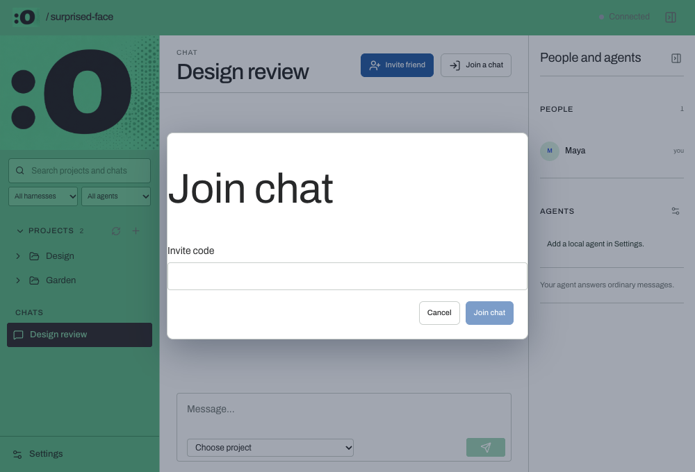
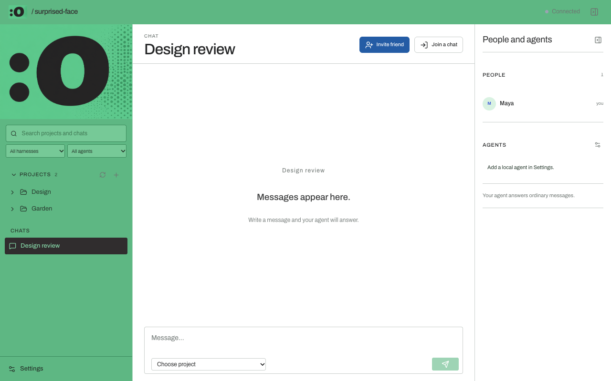
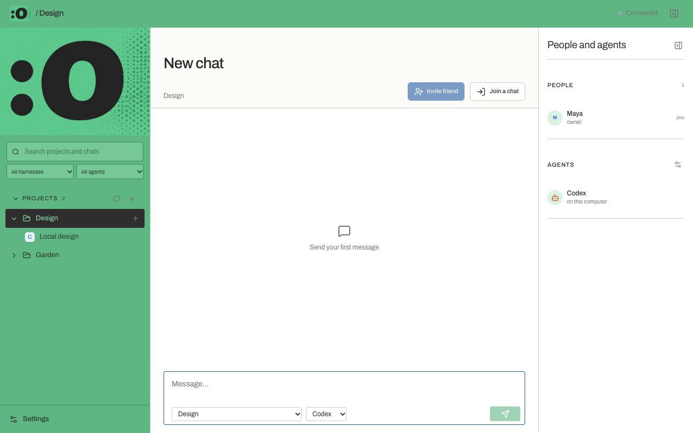
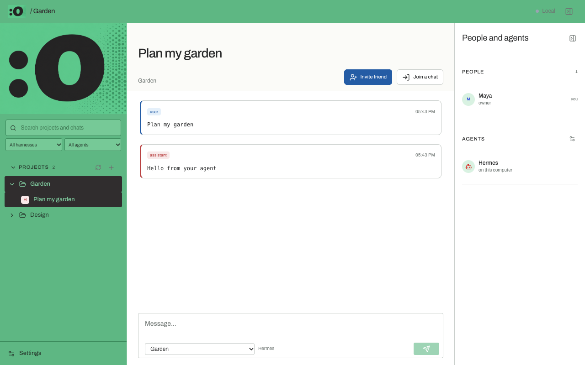
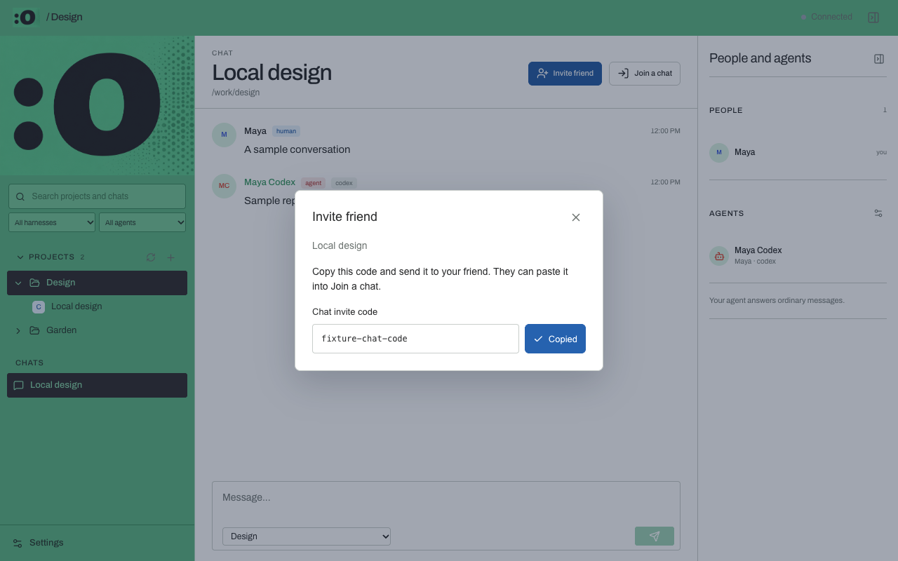
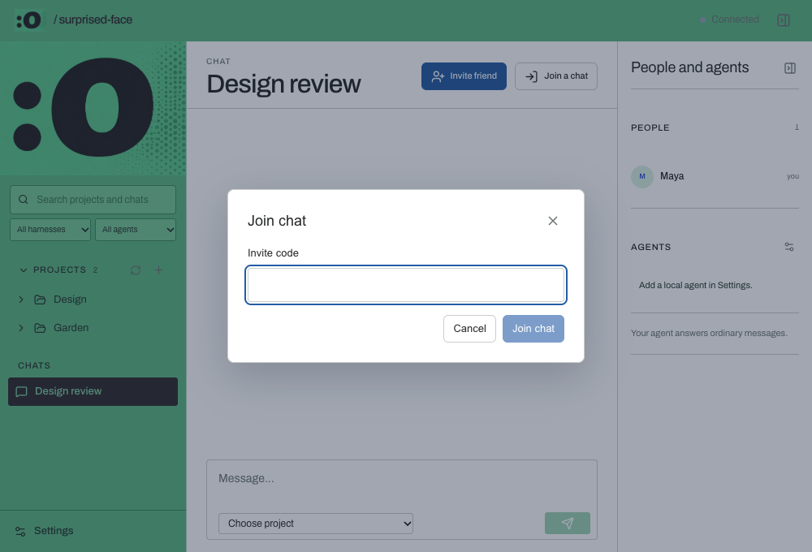
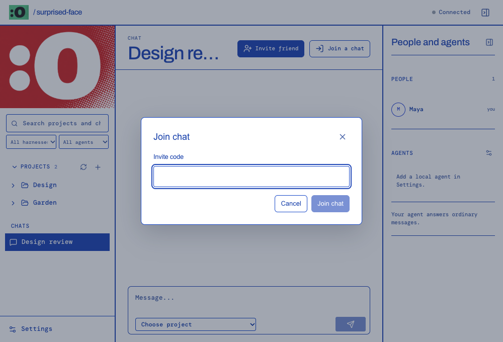
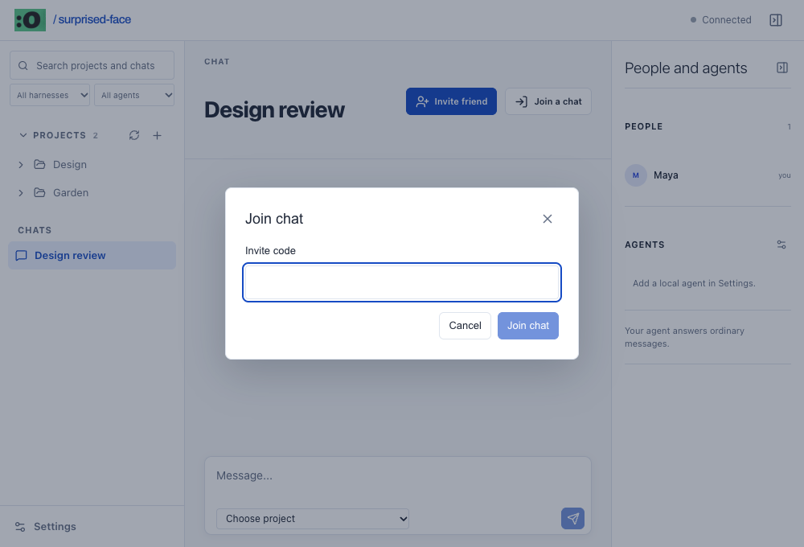
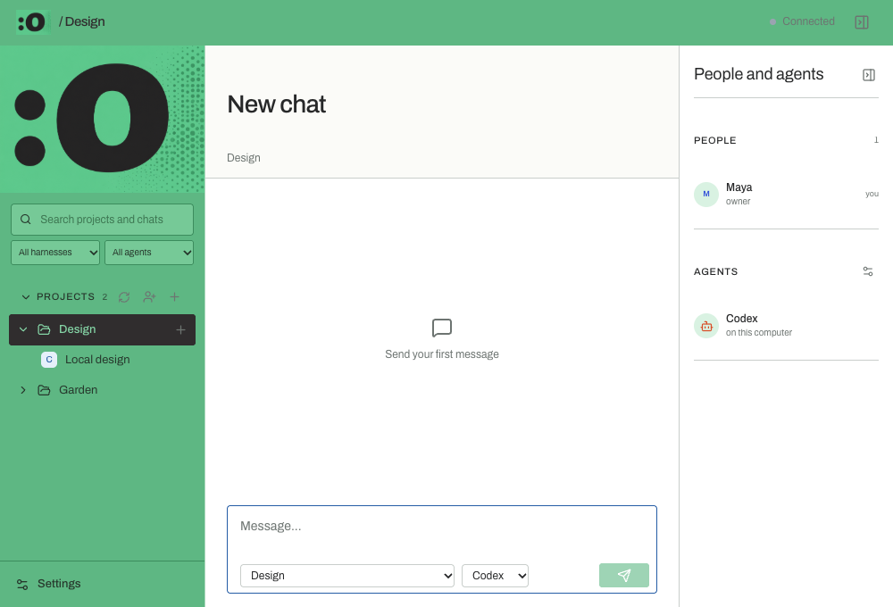
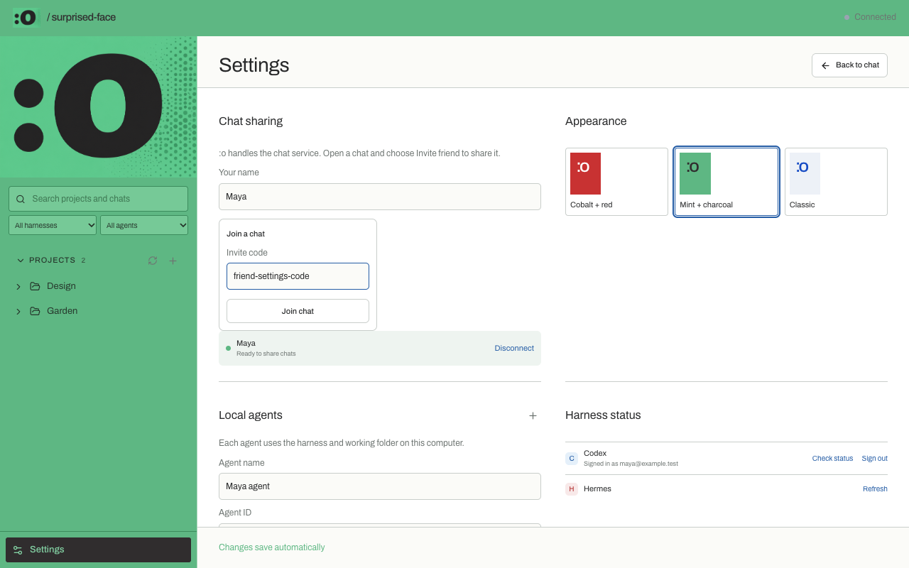
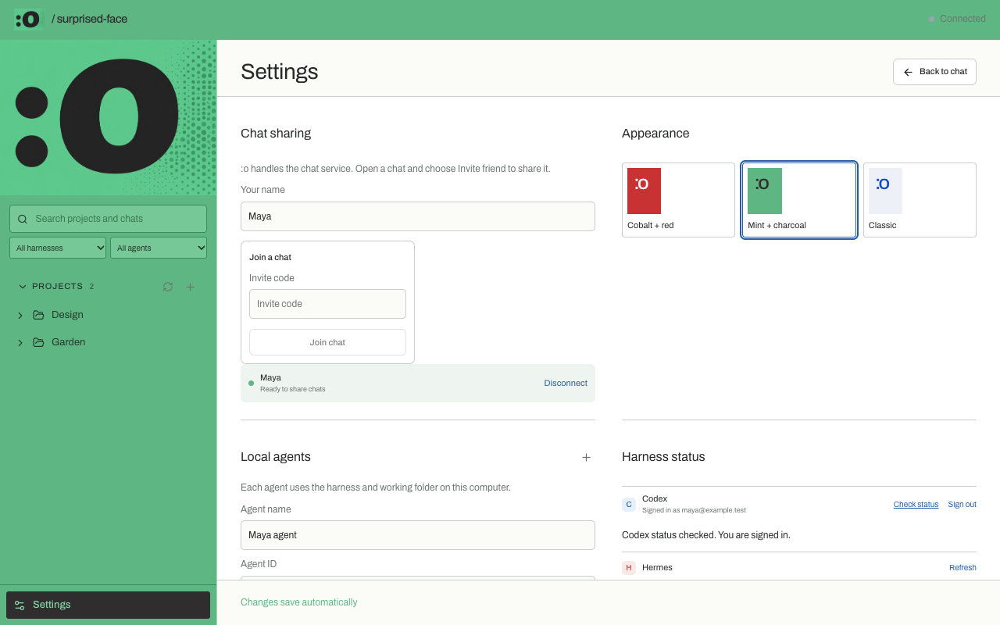
Current structured results
Playwright resultsDesktop chat view
2026-10-05: opened Join a chat in the running Electron app. The form showed its padded layout and regular heading, with Invite code focused. Escape closed the dialog and returned focus to Join a chat. Invite generation, copying, failure/retry, and modal keyboard behavior were exercised with synthetic service and clipboard responses in the automated interface run above.
2026-10-05: opening Settings in the live Electron app detected the existing Codex account and displayed Sign out. Check status displayed Codex status checked. You are signed in. Selecting Mint automatically wrote mint-charcoal to the local settings file, and the chat retained that theme after Back to chat. The original Cobalt appearance was then restored. The live account was not signed out; logout success and failure were exercised with synthetic account responses in the interface tests above. Account identity is omitted from this report.
2026-10-05: connected accounts previously hid the Settings invite field. The regression UI check failed because the field was absent; the new-account case already passed. Settings now keeps Join a chat visible for both. Checked the connected live Electron Settings view and observed Invite code and Join chat.
2026-10-05: investigated a hosted invite failure. The running preview used the generic Electron profile, whose saved service was http://127.0.0.1:8790, with no local Worker running. Both curl and Node fetch returned HTTP 200 from the hosted health endpoint. After setting the app identity and dedicated profile, the preview loaded its existing hosted account and chat. Clicking Invite friend showed Invite code copied; pasting the system clipboard into Join a chat confirmed a nonempty code. No friend was contacted and no join was submitted.
Profile regression before the fix
The extracted old development path returned Electron instead of surprised-face. The regression assertion failed with those actual and expected paths. The current test command covers the corrected path, explicit development overrides, and startup identity order.
Failing profile result- 2026-10-05: checked the Electron development preview with two isolated app profiles on one computer, the real local catalog, and a throwaway local Worker.
- Selected surprised-face, opened a new draft with the project plus button, and sent "Reply with exactly: chat-ready. Do not use tools or change files." The app created a native Codex session and displayed its live answer, "chat-ready". Reopening the new sidebar chat loaded the saved exchange without injected project setup instructions.
- The green logo, composer, and collapsible People and agents panel were visible. Raw harness records and per-chat sign-in controls were absent. Settings contained harness sign-in; clicking Settings again or Back to chat closed it.
- Clicked the Invite friend icon. The app created the chat account, imported the two visible messages, copied the invite code, and briefly showed "Invite code copied". Pasting the system clipboard into the Join a chat form confirmed that a nonempty code had actually been copied. Codes are omitted from this report.
- Sent "Reply with exactly: invite-chat-ready. Do not use tools or change files." from that chat. Its linked native Codex session answered "invite-chat-ready".
- A fresh guest profile joined with the code and the name Friend check. It saw the four existing messages and both people in the participant panel, then sent "Hello from the friend check" successfully. This was a second identity on the same computer, not a second physical desktop.
- The guest send exposed a duplicate pending copy after acknowledgement. After the fix, sent "Delivery acknowledgement check" and observed one delivered message with no pending copy. Hiding and reopening People and agents also worked.
- Live model calls exercised Codex. Hermes creation and sending were checked with mocked adapter and rendered UI fixtures in the automated runs above.
Delivery acknowledgement regression
The rendered UI check failed before the fix because the delivered text appeared twice. The passing check now asserts one committed row and no pending sending row without another incoming event.
Failing structured result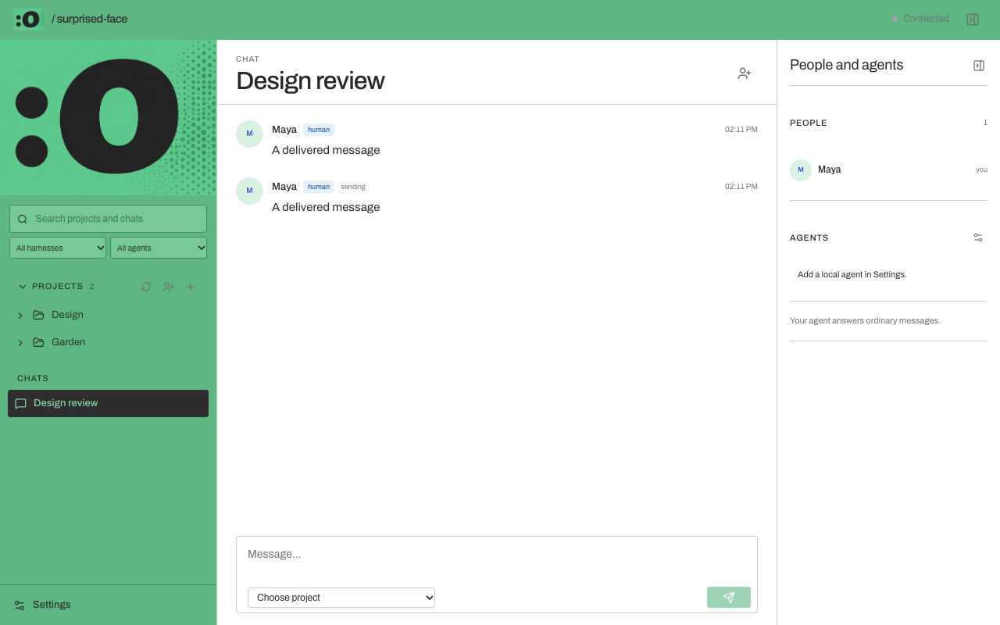
Room service
| Check | Result | Status |
|---|---|---|
| Session identity | Owner and invited members authenticate with their participant IDs. | Pass |
| App account creation | A new person can register without a Cloudflare key and cannot read existing chats. | Pass |
| Chat invite access | Codes admit people to one chat; new chats stay private until invited. | Pass |
| Solo and group agent routing | Solo chats call their owner agent automatically; group chats require a mention. | Pass |
| Existing chat history | An imported Codex conversation is visible to invitees and retries do not duplicate messages. | Pass |
| Agent routing | An @agent message creates a turn the configured owner can claim. | Pass |
| Stream ordering | A second agent waits, then receives the completed reply and intervening human messages. | Pass |
| Live updates | WebSocket clients receive new messages with participant names. | Pass |
| Event order | The room returns 18 contiguous events with participant names. | Pass |
| Idempotent send | Retrying the same client ID returns the original message sequence. | Pass |
Worker output
⛅️ wrangler 4.147.0
────────────────────
Your Worker has access to the following bindings:
Binding Resource Mode
env.DIRECTORY (WorkspaceDirectory) Durable Object local
env.ROOMS (ChatRoom) Durable Object local
env.APP_ORIGIN ("*") Environment Variable local
env.SESSION_SECRET ("(hidden)") Environment Variable local
env.ADMIN_SECRET ("(hidden)") Environment Variable local
⎔ Starting local server...
Wrangler detected this dev session is running in an AI agent.
The Local Explorer API is available at http://127.0.0.1:62919/cdn-cgi/local/explorer/api
Useful routes:
GET http://127.0.0.1:62919/cdn-cgi/local/explorer/api/local/workers - local Workers and bindings
POST http://127.0.0.1:62919/cdn-cgi/local/explorer/api/local/scheduled?worker=<name> - invoke a Worker's scheduled handler; cron is required (see the OpenAPI schema for the full request)
GET http://127.0.0.1:62919/cdn-cgi/local/explorer/api/storage/kv/namespaces - KV namespaces
GET http://127.0.0.1:62919/cdn-cgi/local/explorer/api/d1/database - D1 databases
GET http://127.0.0.1:62919/cdn-cgi/local/explorer/api/r2/buckets - R2 buckets
GET http://127.0.0.1:62919/cdn-cgi/local/explorer/api/workers/durable_objects/namespaces - Durable Object namespaces
GET http://127.0.0.1:62919/cdn-cgi/local/explorer/api/workflows - Workflows
POST http://127.0.0.1:62919/cdn-cgi/local/explorer/api/local/observability/query - run a read-only SQL query (SELECT/WITH only) over captured request traces and console logs. Tables: spans, logs (read attributes via json(attributes)). Example:
curl -X POST http://127.0.0.1:62919/cdn-cgi/local/explorer/api/local/observability/query -H 'Content-Type: application/json' -d '{"sql":"SELECT service, name, outcome, duration_ms FROM spans WHERE parent_id IS NULL LIMIT 20"}'
POST http://127.0.0.1:62919/cdn-cgi/local/explorer/api/local/observability/clear - clear all captured traces and logs
If the routes above don't cover what you need, fetch the full OpenAPI schema (large - use only as a last resort):
GET http://127.0.0.1:62919/cdn-cgi/local/explorer/api - OpenAPI schema
[wrangler:info] Ready on http://127.0.0.1:62919
[wrangler:info] GET /health 200 OK (3ms)
[wrangler:info] GET /health 200 OK (1ms)
[wrangler:info] POST /v1/admin/bootstrap 200 OK (4ms)
[wrangler:info] POST /v1/register 200 OK (2ms)
[wrangler:info] GET /v1/rooms 200 OK (2ms)
[wrangler:info] GET /v1/me 200 OK (1ms)
[wrangler:info] GET /v1/rooms 200 OK (2ms)
[wrangler:info] POST /v1/agents 200 OK (5ms)
[wrangler:info] POST /v1/rooms/3f402ccf-c8ab-4d21-ad4e-4974c8e5c259/messages 200 OK (4ms)
[wrangler:info] POST /v1/rooms/3f402ccf-c8ab-4d21-ad4e-4974c8e5c259/turns/claim 200 OK (2ms)
[wrangler:info] POST /v1/rooms/3f402ccf-c8ab-4d21-ad4e-4974c8e5c259/turns/086ab9a2-cfa1-464a-9f85-8466329eb4e3/finish 200 OK (3ms)
[wrangler:info] POST /v1/rooms/3f402ccf-c8ab-4d21-ad4e-4974c8e5c259/invites 200 OK (2ms)
[wrangler:info] POST /v1/join 200 OK (3ms)
[wrangler:info] POST /v1/join 200 OK (2ms)
[wrangler:info] POST /v1/join 403 Forbidden (1ms)
[wrangler:info] GET /v1/rooms 200 OK (2ms)
[wrangler:info] GET /v1/members 200 OK (2ms)
[wrangler:info] GET /v1/agents 200 OK (1ms)
[wrangler:info] GET /v1/rooms/3f402ccf-c8ab-4d21-ad4e-4974c8e5c259/events 200 OK (3ms)
[wrangler:info] POST /v1/rooms 201 Created (1ms)
[wrangler:info] GET /v1/rooms 200 OK (1ms)
[wrangler:info] GET /v1/rooms/9d3962f4-fff4-4ec7-9e0d-4aeb86330d2f/events 403 Forbidden (1ms)
[wrangler:info] GET /v1/rooms/9d3962f4-fff4-4ec7-9e0d-4aeb86330d2f/members 403 Forbidden (1ms)
[wrangler:info] POST /v1/rooms/9d3962f4-fff4-4ec7-9e0d-4aeb86330d2f/import 200 OK (4ms)
[wrangler:info] POST /v1/rooms/9d3962f4-fff4-4ec7-9e0d-4aeb86330d2f/import 200 OK (3ms)
[wrangler:info] POST /v1/rooms/9d3962f4-fff4-4ec7-9e0d-4aeb86330d2f/invites 200 OK (2ms)
[wrangler:info] POST /v1/rooms/join 200 OK (2ms)
[wrangler:info] POST /v1/rooms/9d3962f4-fff4-4ec7-9e0d-4aeb86330d2f/import 403 Forbidden (2ms)
[wrangler:info] GET /v1/rooms/9d3962f4-fff4-4ec7-9e0d-4aeb86330d2f/events 200 OK (2ms)
[wrangler:info] GET /v1/rooms 200 OK (1ms)
[wrangler:info] GET /v1/rooms/3f402ccf-c8ab-4d21-ad4e-4974c8e5c259/members 200 OK (2ms)
[wrangler:info] POST /v1/rooms/3f402ccf-c8ab-4d21-ad4e-4974c8e5c259/messages 200 OK (1ms)
[wrangler:info] GET /v1/rooms/3f402ccf-c8ab-4d21-ad4e-4974c8e5c259/connect 101 Switching Protocols (2ms)
[wrangler:info] POST /v1/agents 200 OK (4ms)
[wrangler:info] POST /v1/agents 200 OK (2ms)
[wrangler:info] POST /v1/rooms/9d3962f4-fff4-4ec7-9e0d-4aeb86330d2f/messages 403 Forbidden (2ms)
[wrangler:info] POST /v1/rooms/3f402ccf-c8ab-4d21-ad4e-4974c8e5c259/messages 200 OK (3ms)
[wrangler:info] POST /v1/rooms/3f402ccf-c8ab-4d21-ad4e-4974c8e5c259/turns/claim 200 OK (1ms)
[wrangler:info] POST /v1/rooms/3f402ccf-c8ab-4d21-ad4e-4974c8e5c259/turns/claim 200 OK (3ms)
[wrangler:info] POST /v1/rooms/3f402ccf-c8ab-4d21-ad4e-4974c8e5c259/messages 200 OK (2ms)
[wrangler:info] POST /v1/rooms/3f402ccf-c8ab-4d21-ad4e-4974c8e5c259/turns/claim 409 Conflict (1ms)
[wrangler:info] POST /v1/rooms/3f402ccf-c8ab-4d21-ad4e-4974c8e5c259/turns/162f9f24-013b-4187-af6f-1a794800d886/chunk 200 OK (3ms)
[wrangler:info] POST /v1/rooms/3f402ccf-c8ab-4d21-ad4e-4974c8e5c259/turns/162f9f24-013b-4187-af6f-1a794800d886/finish 200 OK (2ms)
[wrangler:info] POST /v1/rooms/3f402ccf-c8ab-4d21-ad4e-4974c8e5c259/turns/claim 200 OK (2ms)
[wrangler:info] POST /v1/rooms/3f402ccf-c8ab-4d21-ad4e-4974c8e5c259/messages 200 OK (2ms)
[wrangler:info] GET /v1/rooms/3f402ccf-c8ab-4d21-ad4e-4974c8e5c259/events 200 OK (1ms)Deployed service
| Request | Response | Status |
|---|---|---|
GET https://surprised-face-rooms.camus-00.workers.dev/health | {"ok":true,"service":"surprised-face-rooms"} | Pass |
POST /v1/register with an empty body | 400 with a required-name error, confirming the public registration route is deployed. | Pass |
Cloudflare shows Workers Free active and no payment method on file.
App run
| Action | Observed result | Status |
|---|---|---|
| Owner sign-in | The app opened the bootstrapped workspace using its locally encrypted session and displayed the shared general chat. | Pass |
| Sheep refresh | The packaged Sheep bridge completed a project and conversation refresh from the local harness sources. | Pass |
| Codex account | The Codex app-server account check returned a signed-in account. No model turn was started. | Pass |
| Local agent profile | alejandro-agent is registered for this project. Remote agent execution remains off. | Pass |
| Collaborator access | A chat-specific invite code was generated and copied in an isolated desktop run. A three-device conversation has not been run. | Partial |
The one-time bootstrap secret was removed locally and from the Worker after setup. The app package is unsigned and currently built for macOS arm64.